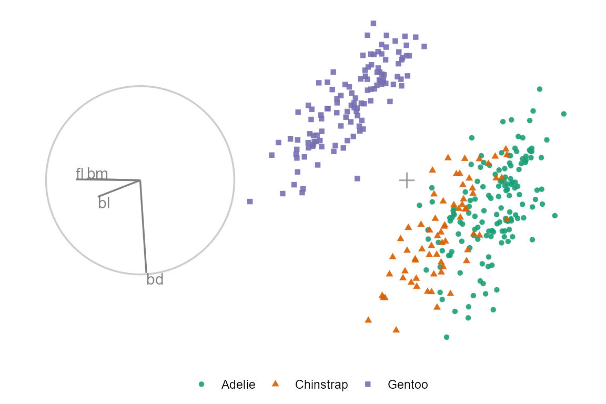

Getting started with spinifex
Nicholas Spyrison
2022-02-23
Source:vignettes/getting_started_with_spinifex.Rmd
getting_started_with_spinifex.RmdIntroduction
Numeric multivariate data is ubiquitous and viewing data within data-space (rather than summarized as parameters or statistics) is a critical part of exploratory data analysis and the data analysis workflow in general. Viewing multivariate quickly becomes complex. Linear projections of high dimensional spaces offer a scalable way to extend viewing these data-spaces as the dimension of the data increases. Traditionally, these are viewed as static orthogonal pairs. Alternatively, tours, are a class of linear projections that animate many frames over small changes in the projection basis.
The package spinifex allows the application of manual tours, where a selected variable is rotated fully into and out of the give projection basis. Its also facilitates a layered composition of tours interoperable with tourr. These composition can then be animated to interactive html widget with plotly or to .gif/.mp4 format with gganimate.
Dynamic projections of high dimensional data, tours
Tours are a class of dynamic orthogonal (linear) projections that embed \(p-\)dimensional space into a \(d-\)dimensional subspace and animates many such projections over small changes to the projection basis (essesentially the orientation of the data). Tours are useful in identify clustering, outliers, and structure held within numeric multivariate data.
This concept is analogous to shadows. Suppose a bar stool is held in front of a light source. This is a linear projection of a 3D object casting a 2D shadow. Some projections may not convey much information (the seat may only cast a circular shadow). If we observe the shadow change over as the barstool is rotated, we quickly understand the shape of the object. The same is true for tours; watching the permanence of observations between frames conveys more information than unlinked orthogonal views.
We focus on the application of the manual tours in this document. In a manual tour, the contributions of one variable are manipulated to show the impact that it has on the structure of the projection. Controlling the coefficients of a single variable can be insightful after finding a projection of interest, perhaps with the use of a guided tour. A wider application of tours can be accomplished with with the package tourr, CRAN.R-project.org/package=tourr.
Usage
In the below examples we go through some use cases for manual tours. To get started we’ll load a couple packages we use.
Example 1 - Radial tour
For this example, we’ll be using the penguins data set. It consists of 333 observations of penguins near Palmer Station, Antarctica across 3 different species.
The following example will explore how changing the contributions of the variable, bill_length_mm, will affect the structure of the projection. We’ll initialize a random basis and then view the manipulation space.
dat_std <- scale_sd(penguins_na.rm[, 1:4])
colnames(dat_std) <- c("bl", "bd", "fl", "bm")
bas_pca <- basis_pca(dat_std)
clas <- penguins_na.rm$species
ggtour(basis_array = bas_pca, data = dat_std) +
proto_basis()We started from a random basis, that explains the orthogonal projection from \(p\) to \(d\) space. Use proto_basis to see the reference axes, a visual depiction of how the variables contributed to the xy directions of the 2D projection.
We want to explore how the coefficients of aede2 contribute to the structure in this projection, so we set the manipulation variable to its column number, 3. To change the contributions without breaking the orthogonality of the other variables, we need to add a dimension. We call this new space the manipulation space, which can be viewed with the function view_manip_space(). Note that the projection plane containing the reference frame is laid down on the surface, while the manipulation dimension is at a right angle out-of-plane, with a full contribution on the manip var.
view_manip_space(basis = bas_pca, manip_var = 1) Now we have the freedom to change the contributions of bill_length_mm, we do so by controlling the values of the in-plane angle, \(\theta\), and the out of plane angle, \(\phi\). in this example we’ll perform a radial manual tour, holding \(\theta\) constant while we vary the values of \(\phi\) to remove and maximize the contribution of the manipulation variable.
## Save a tour path
mt_path <- manual_tour(basis = bas_pca, manip_var = 3)
## Compose the display
my_ggtour <- ggtour(basis_array = mt_path, data = dat_std, angle = .2) +
## Angle is the distance between (geodesically) interpolated frames
proto_default(aes_args = list(color = clas, shape = clas))
## Animate
animate_gganimate(ggtour = my_ggtour, fps = 6,
height = 3, width = 4.5, units = "in", res = 150)
## Or as a plotly html widget
#animate_plotly(ggt, fps = 6)
Example 2 - Glyph map
Another of the manual tour is the creation a glyph-maps, where time series can be shown side-by-side, like faceting (offsetting) on their lat/long physical positions. We’ll use the following GGally glyph-map as an example
We’ll perform a horizontal rotation and followed by the vertical rotation before bringing them together. we apply the horizontal rotation (\(\theta\)= 0) on the day values (manip_var = 3). Pre-multiply the data with the rotation matrix to project the data.
## Initialize
nasa_std <- cbind(
GGally::nasa[c("x", "y")],
scale_sd(GGally::nasa[c("day", "surftemp")])
)
bas <- tourr::basis_init(ncol(nasa_std), 2)
## Horizontal rotation
m_sp_x <- create_manip_space(basis = bas, manip_var = 3)
rot_mat_x <- rotate_manip_space(manip_space = m_sp_x,
theta = 0, phi = pi / 6)
rot_x <- data.frame(as.matrix(nasa_std) %*% as.matrix(rot_mat_x))
colnames(rot_x) <- c("x1", "x2", "x_manip_sp")Likewise, we’ll perform a vertical rotation (\(\theta\)= pi/2) on surface temperature (manip_var = 4). Combine the rotations and plot just the rotated values without lat/long or x/y markers, neat!
## Vertical rotation
m_sp_y <- create_manip_space(basis = bas, manip_var = 4)
rot_mat_y <- rotate_manip_space(manip_space = m_sp_y,
theta = pi / 2, phi = pi / 6)
rot_y <- data.frame(as.matrix(nasa_std) %*% as.matrix(rot_mat_y))
colnames(rot_y) <- c("y1", "y2", "y_manip_sp")
## Combine rotations
rot_xy <- bind_cols(rot_x, rot_y, .name_repair = "unique") %>%
select(x = x1, y = y2)
ggplot(rot_xy, aes(x = x, y = y)) + geom_point(size = 0.3) +
theme_bw() + labs(x = "", y = "")Example 3 - Guided tour
Radial tours are often employed after an interesting feature has been identified. How the contributions of each variable impact the structure of resulting PCA, for example, might be interesting to explore. Alternatively, we can perform projection pursuit to maximize an objective function within the projection and performing a hill-climbing algorithm and explore what effect the contributions of the variables have there. Let’s do just that, optimizing a Holes indexed guided tour using the package tourr.
## Transform data
dat_std <- scale_sd(penguins_na.rm[, 1:4])
## Save holes indexed guided tour
holes_path <- save_history(dat_std, tourr::guided_tour(tourr::holes()))
## Compose display
ggt <- ggtour(holes_path, dat_std, angle = .2) +
proto_default(aes_args = list(color = clas, shape = clas))
## Animate
animate_gganimate(ggt, height = 3, width = 4.5, units = "in", res = 150)
## Or as a plotly html widget
#animate_plotly(ggt)
This shows the optimization path of the holes index. We’ll grab the reference axes from the last frame and used that a starting orientation for a manual tour.
## Save only the final holes frame
holes_bas <- basis_guided(dat_std, index_f = tourr::holes(), d = 2)
## Print a single frame composition, a ggplot
ggtour(holes_bas, dat_std, angle = .2) +
proto_default(aes_args = list(color = clas, shape = clas))
We’ll select aede2 as the manip_var, as it is mostly orthogonal to four of the other variables and often has a larger contribution than tars1.
## Alternatively, ask for the variable by rank of the magnitude contributed:
(mv <- manip_var_of(holes_bas, rank = 1))
## A radial, manual tour from the resulting holes basis
mt_path <- manual_tour(holes_bas, mv)
## Compose tour
ggt <- ggtour(mt_path, dat_std) +
proto_point(aes_args = list(color = clas, shape = clas)) +
proto_basis() +
proto_origin()
## Animate
animate_gganimate(ggt, height = 3, width = 4.5, units = "in", res = 150)
## Or as a plotly html widget
#animate_plotly(ggt)
We can see that aede2 is important in distinguishing between the purple cluster and the green cluster. However, even when its contribution is zeros the contribution of tars1 is enough to keep the cluster from overlapping.
Namesake
The name ‘spinifex’ comes from the spinifex hopping mouse (wiki), a nocturnal dessert mouse common to arid zones in central and western Australia. As to its relation to this work, in the words of Di Cook “It spins, it hops and needs a mouse.”